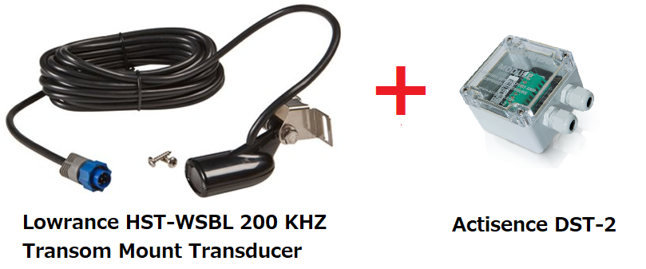
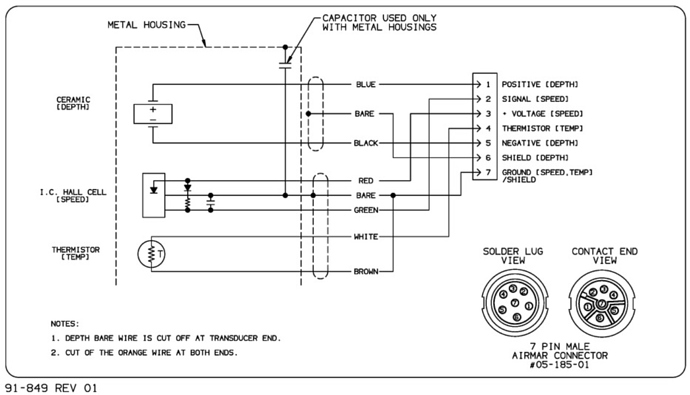
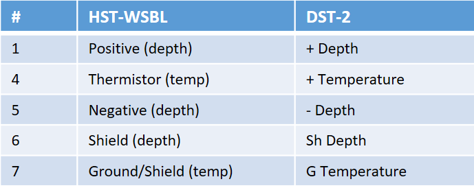
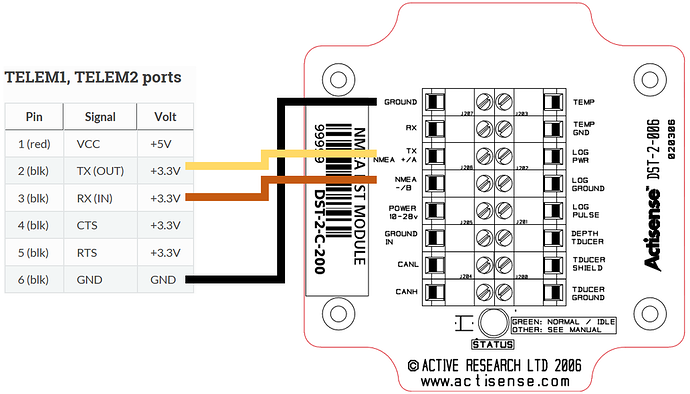

Underwater Sonar (Analog)¶
This page details the setup of a low-cost analog underwater sonar (aka “fish finder”) and a digitizer to convert the analog readings into NMEA 0183 which can be read by ardupilot. This setup allows measuring the depth of the water below a boat. The sensor described has a maximum claimed a range of 300m and a relatively wide beam of 22deg.
These instructions were provided by OlavA at the bottom of this ardupilot.org blog post
images courtesy of lowarnace.com and actisense.com
Note
Support for this sensor was added to Rover-3.4.
Recommended Hardware¶
Lowrance HST-WSBL 83/200 kHz Transom Mount Transducer available from many retailers including amazon.com. Other sensors may also work.
DST-2 200kHz digitizer available from many retailers including Navstore.com (manuals here)
Connecting and Configuring¶
The image below shows the pin-out of an airmar analog transducer, but the pinout is the same as for the Lowrance HST-WSBL
The Lowrance HST-WSBL pins should be connected to the pins on the right side of the DST-2, as shown below. Note that the Lowrance HST-WSBL does not have a speed sensor so only pins 1 and 4-7 should be connected
The DST-2 requires a 10V to 28V power source, meaning it can be powered from a 3S or 4S lipo battery.
Next pins on the left side of the DST-2 (serial and RS-232 output) should be connected to the autopilot’s telemetry/serial input. The easiest connection method is to connect the DST-2’s 5V serial output directly to the telemetry port of the autopilot’s Tx, Rx, and common ground. It is best to check the DST-2 docs before connecting but below shows how the telemetry pins from a Pixhawk (or another autopilot) should be connected to the pins on the left side of the DST-2.
Connect with a ground station to the autopilot and set the following parameters (these settings assume the first sensor is connected to Telem2/Serial2)
SERIAL2_PROTOCOL = 9 (Lidar)
SERIAL2_BAUD = 4 (4800 baud)
Then the following range finder related parameters should be set:
RNGFND1_TYPE = 17 (NMEA)
RNGFND1_MIN_CM = 13
RNGFND1_MAX_CM = 30000 (i.e. 300m). This is the distance in centimeters that the rangefinder can reliably read.
RNGFND1_ORIENT = 25 (i.e. down) if mounted on a boat
Testing the sensor¶
Distances read by the sensor can be seen in the Mission Planner’s Flight Data screen’s Status tab. Look closely for “sonarrange”.